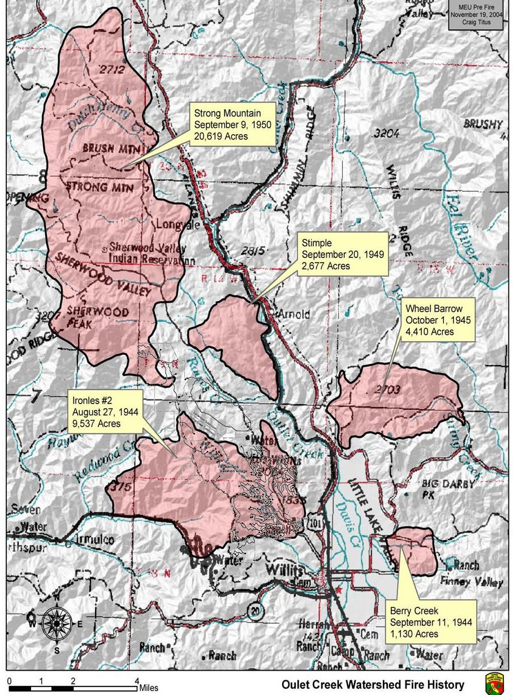

The essence of Brooktrails
A community planned around forest conservation.
Brooktrails grew from the former Diamond D Ranch northwest of Willits. In the late 1960s, development plans paired homes and infrastructure with a large conservation dedication that became Brooktrails Redwood Park.
The community's public history spans resort-era promotion, formation of local improvement districts, transition to a Community Services District, water and wastewater development, fire protection, recreation, and decades of planning around life in a forest setting.
Historical claims and interpretations can be explored in full through the retained source archive and original documents.

Continuity
Water. Fire. Forest. Community.
1939Southern Pacific promotes the Diamond D Ranch area.
1960sBrooktrails development and conservation plans take shape.
1988Ordinance 63 formally establishes Brooktrails Redwood Park.
TodayThe district continues essential services and stewardship.

